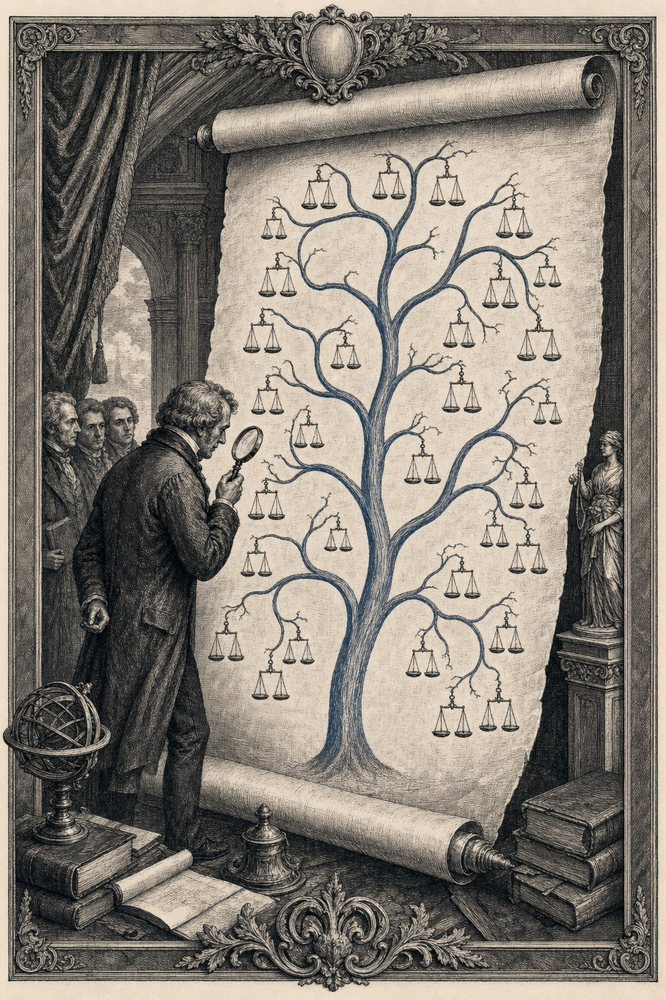

Perché è necessario — l'Europa tra zar, giuristi e chimico

L'analisi

Bruxelles come variabile, non come costante
Perché l'anello con maggiore inerzia all'interno di una riforma olandese non ha diritto di veto — purché l'Olanda osi rendere pubblica la propria valutazione.

I sei ordini di fasatura
Come si ristruttura un impianto di governance portante senza che collassi durante i lavori? Sei fasi, dieci anni, un solo copione.

Chi blocca, e quanto pesa?
Il vertice di Pareto di dodici attori che insieme portano l'ottanta percento del peso frenante — e cosa possiamo fare concretamente al riguardo.
Le obiezioni e gli specchi

I media come banda elastica
Non come messaggero, non come causa — come strumento di misura. Come lo strato mediatico rende visibile la tensione nel sistema prima che il governo la riconosca.

Ordini di obiezione
Una classificazione delle obiezioni per peso e logica — affinché ciò che conta in una rivista specializzata non venga confuso con ciò che conta in un salotto di casa.

Venti obiezioni attuali
Le venti obiezioni che oggi circolano nel dibattito pubblico olandese — pesate, classificate, risposte.
Lo specchio svizzero
Cosa mostra la Svizzera da cento anni che in Olanda sarebbe considerato impossibile — e come funziona.

Lo specchio canadese
Lezioni federali apprese per un rilancio federale europeo — cosa fa il Canada che l'Europa non fa ancora.
Il progetto

UEI — un contropotere europeo dalla Svizzera
Un progetto per un secondo organo — un 'Consiglio federale' europeo — in grado di prendere decisioni misurate che talvolta possono andare contro il sentimento popolare.

Lo strato di conoscenza come alleato
Perché università, uffici di pianificazione e consigli consultivi non sono un avversario ma la forza conservatrice su cui si appoggia il progetto.

La strada migliore da percorrere
Una sintesi in quattro punti — cosa richiedono concretamente i primi 100 giorni, il primo anno, i primi cinque anni.